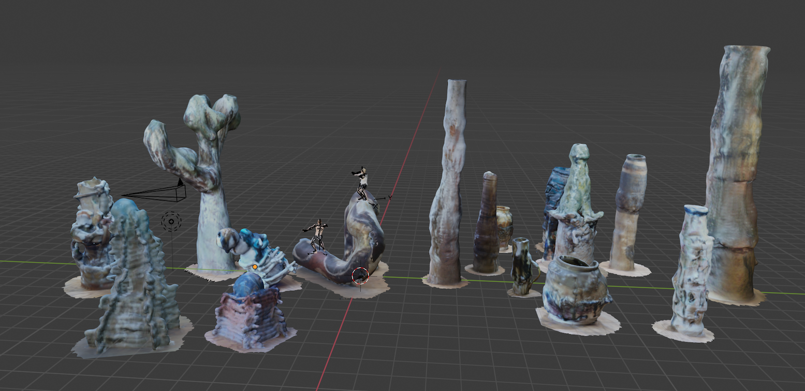
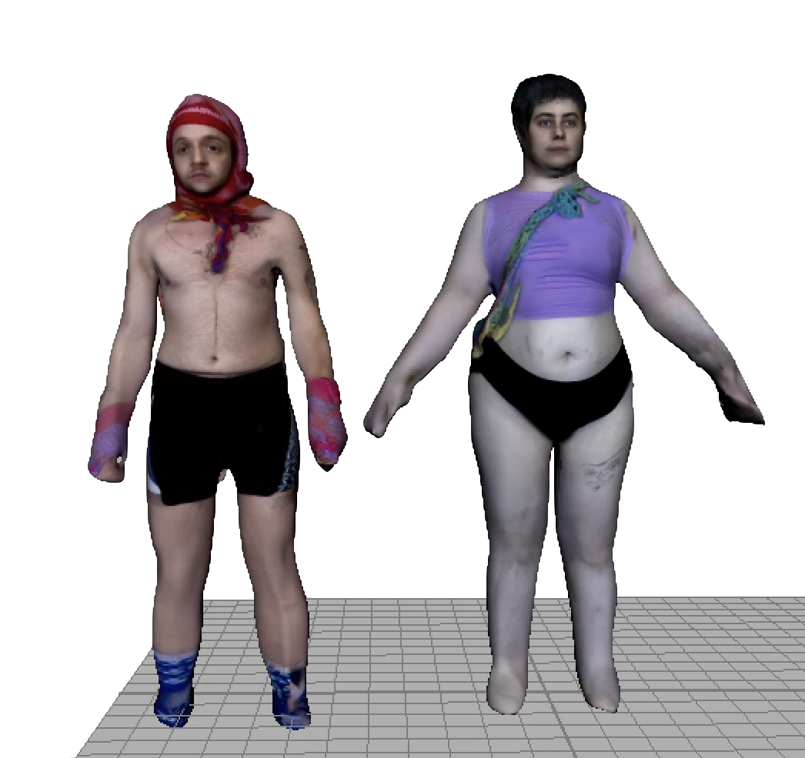
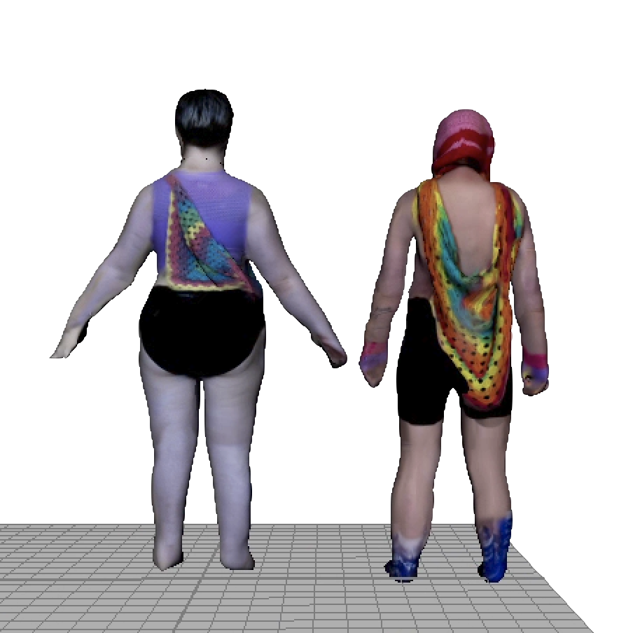
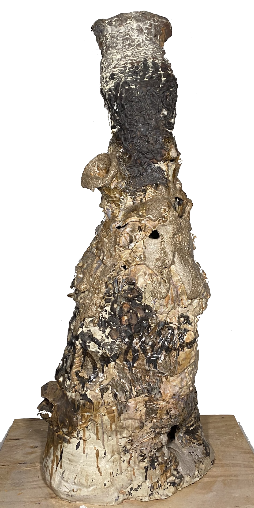
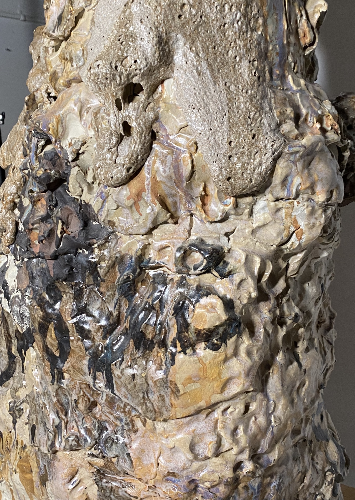
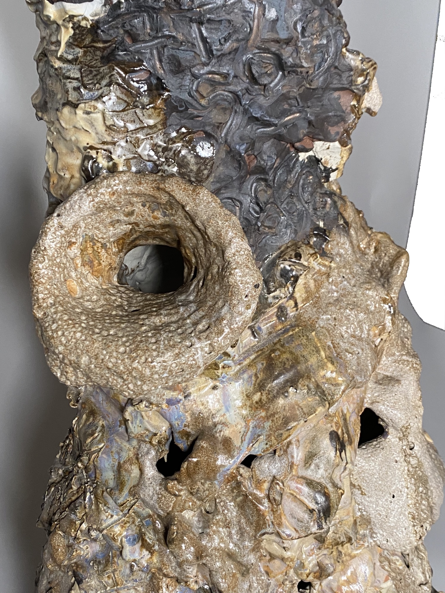
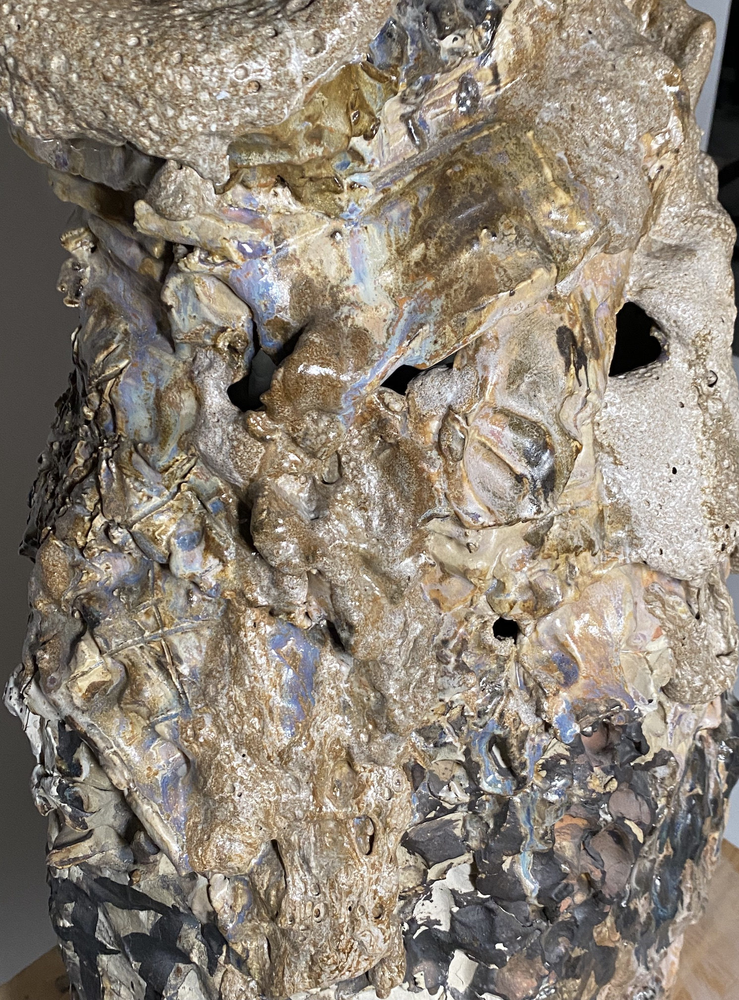

Simulated Trans*ition ft. MelonSprout, summer 2022
3D video - projected on wall during performance

image of 3D scanned Melon ceramics


image of 3D scanned/textured artist bodies
[top: Melon, Clark ; bottom: Clark, Melon]




images of Melon's Glory Hole
the "holes" were taped up to become drums during the performance
Simulated Trans*ition is a performance/installation/video, shown at the Roman-Susan Gallery in June 2022, located in Chicago, is a collaboration between Clark & Melon, and represents a culmination of both of the artist's work over the last few years prior to this piece.
The idea of the piece is about representing different forms of transition, between different mediums and planes of existence. Previous extentions of the body in Melon's ceramic works and instruments are then translated into an entire world/environment. This new world is then inhabited by 3D scans baked with motion capture data of each artist, which is then projected next to both artists making music of further extentions of ceramic works.
This piece also is a representation of different modes of trans-passing in society, and breaking-down the notions and ideas of passing through inputting the artsits into different forms of existence.